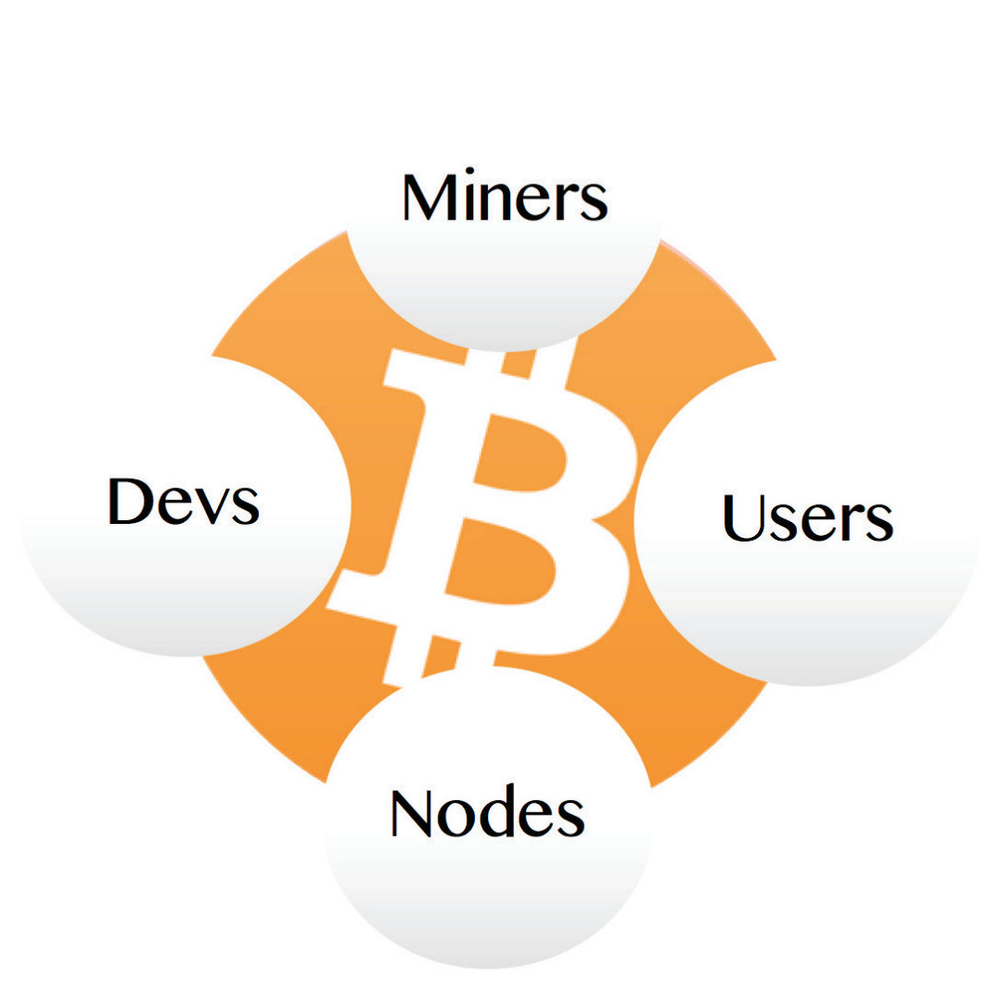

Nasıl Çalışır?
Nasıl Çalışır?
BİTCOİN EKOSİSTEMİ..
Madenciler, Düğümler, Kullanıcılar, Geliştiricilerden oluşur
hepsi bağımsız olarak çalışır,
ve aynı zamanda
karşılıklı
bağımlı olarak,
onu, BİTCOİN'i canlandırmak için!
